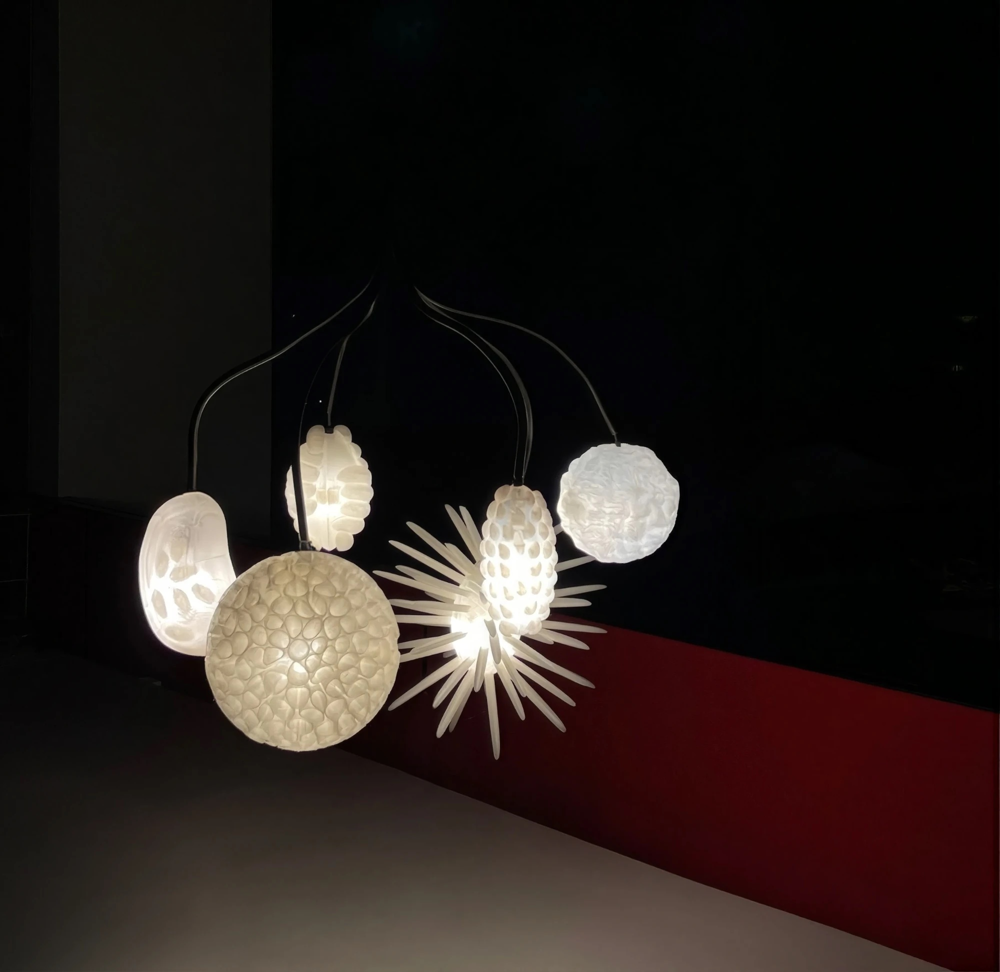

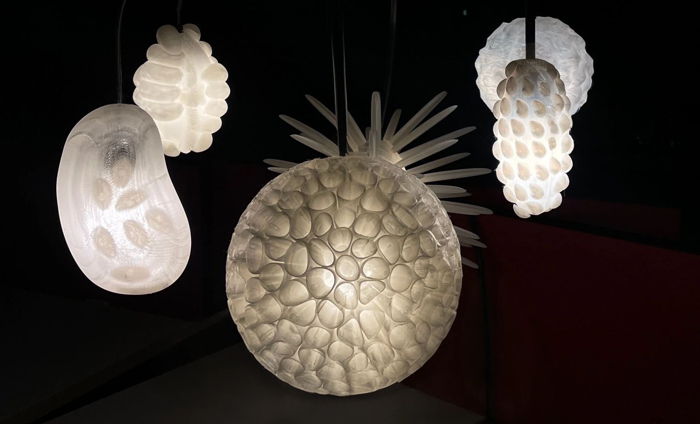
For your chosen family
A pendant lamp for the dining table. Each shade takes its form from a fruit that a community gathers and shares.
Kith means your people, the ones you choose. I wanted to design for the table where they gather.
A lamp over a table is what everyone sits under, so light became the object.
I looked at rituals where food brings a community together. In a cacao ceremony, ceremonial cacao is shared to open the heart: a moment of respect for the land, the plant and the community.
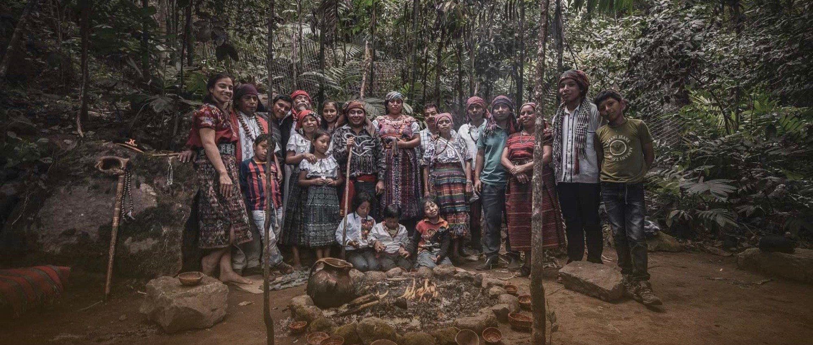
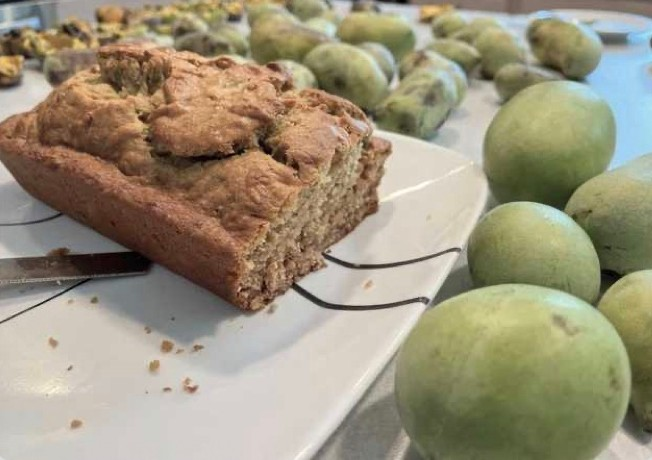
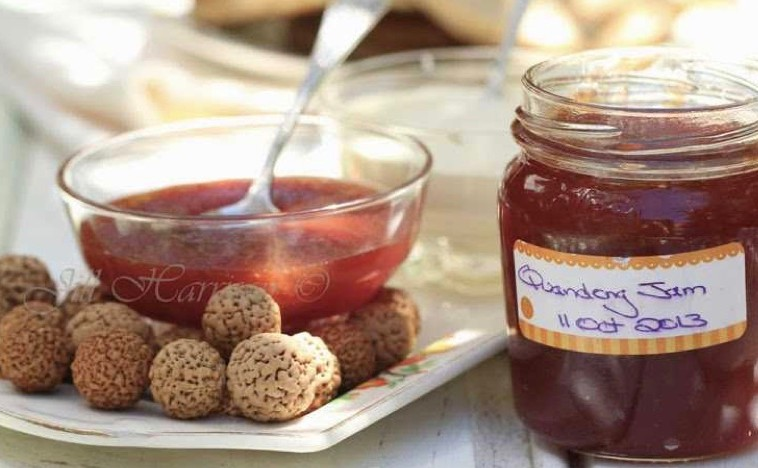
I researched fruits that communities gather and share, and wrote notes on each by hand: quandong, hala pandanus, rambutan, baobab, cacao pod and paw paw.
Each fruit has a strong form of its own. Those forms became the shades.
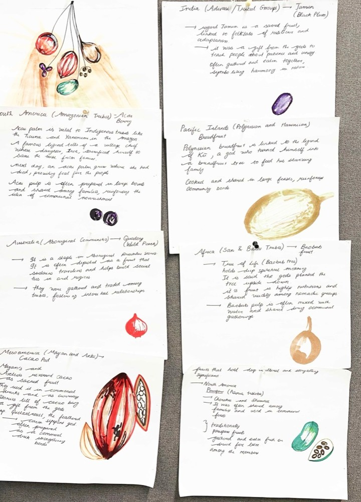
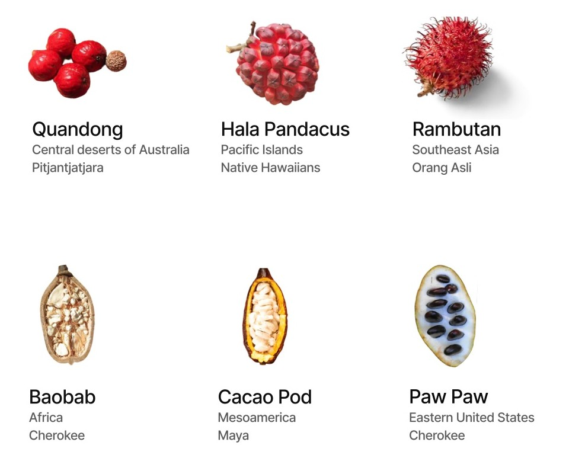
The forms started on paper. I sketched many kinds of objects before it narrowed to a lamp.
The idea that stayed was a cluster: several shades hanging from one stem, like fruit on a branch.
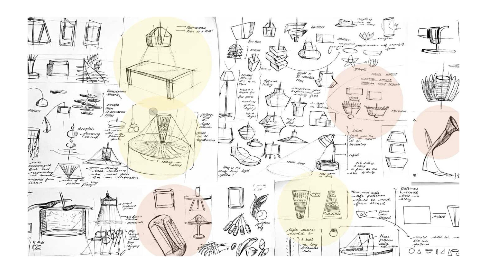
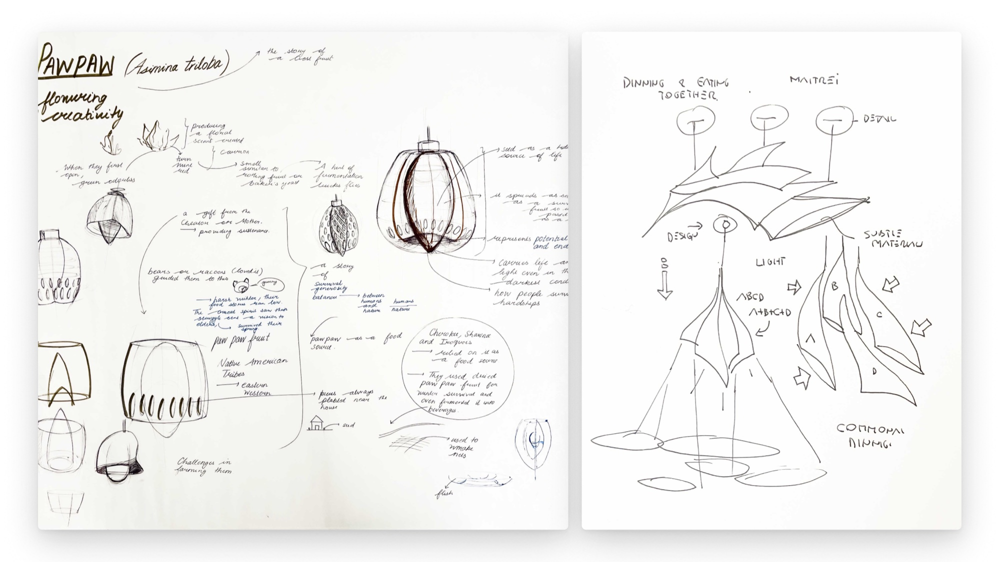
I modelled the shades in Rhino and Grasshopper and 3D printed them.
A pattern that looks good on screen can glow very differently once there is a bulb behind it, so I printed and lit the shapes to test them.
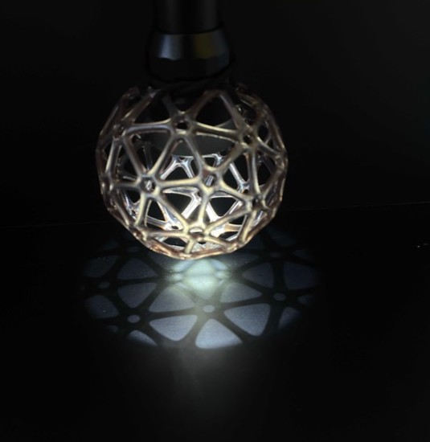
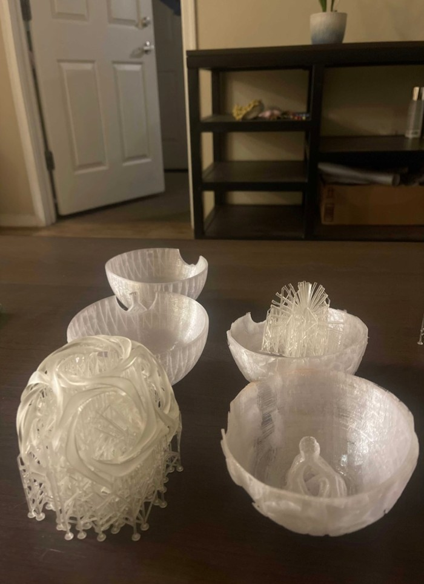
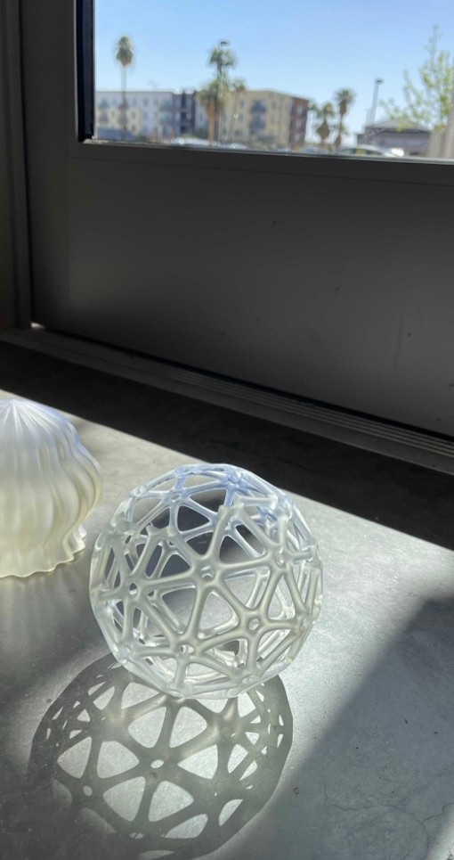
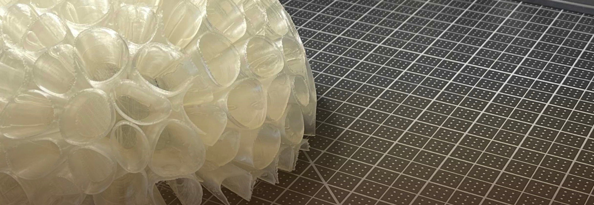
I prepared the copper arms, wired the lamp and assembled it myself.
Doing the wiring taught me how much of a lamp's design is hidden inside it.
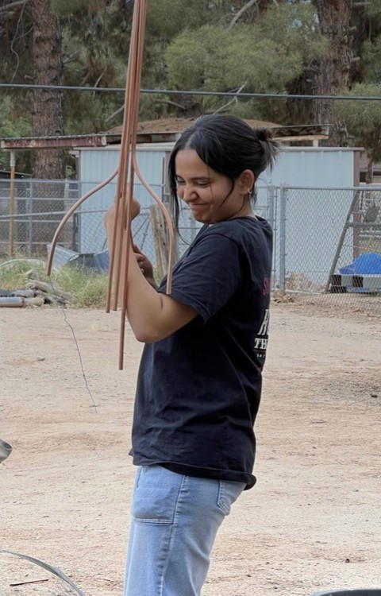
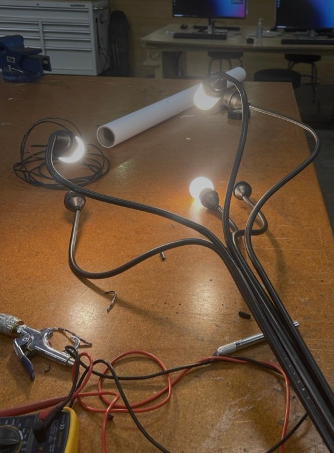
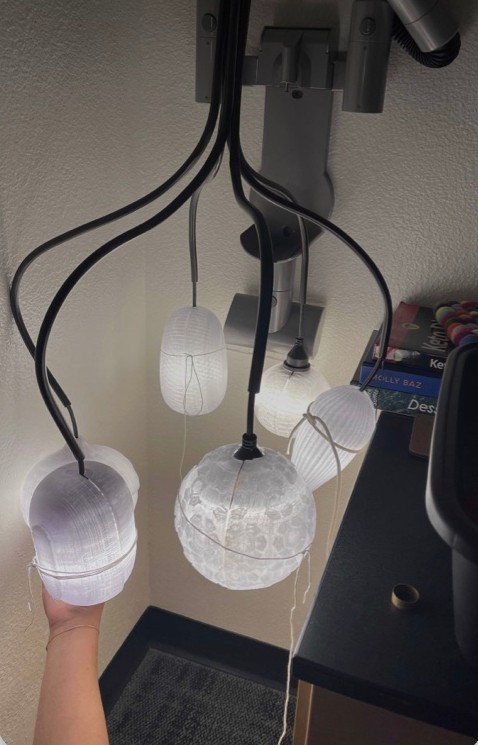
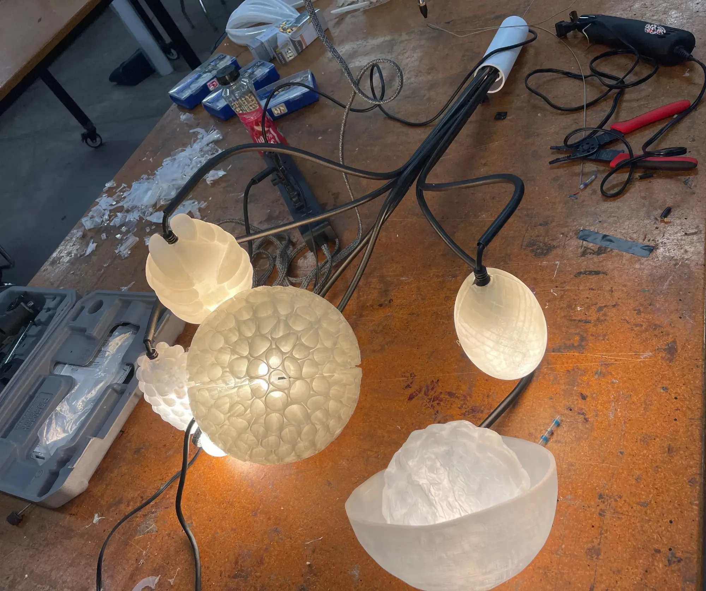
The shades hang as a group from one stem, each a different fruit, all lit together.
Over a table in a dark room it does what I wanted: it pulls people in around it.
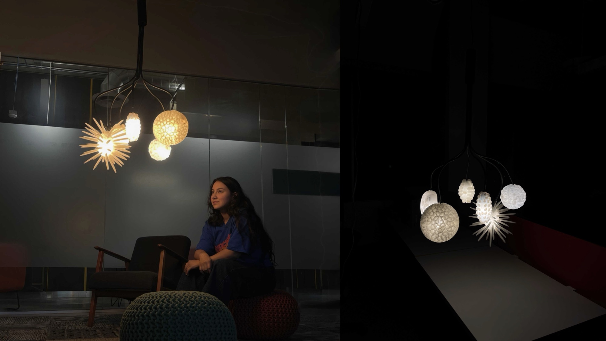

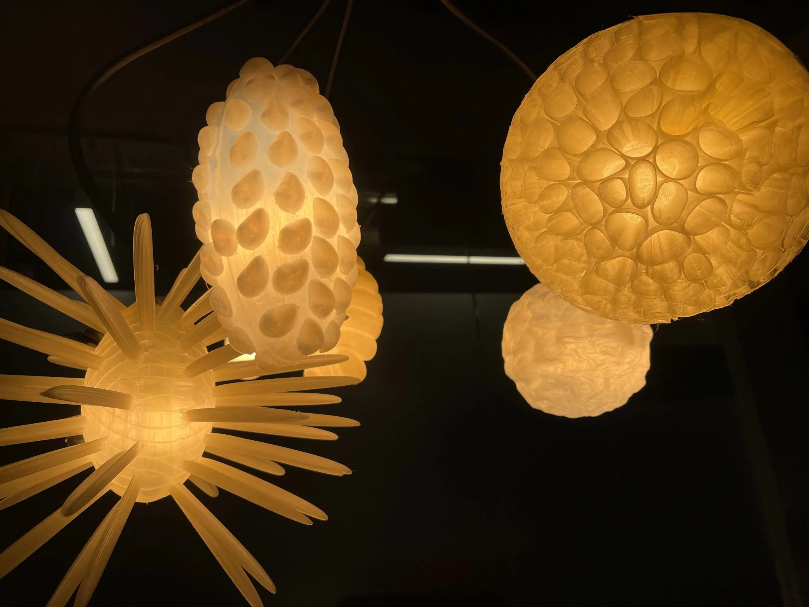